Soient \((a_k)_{k\in\mathbb{N}} = (a_0,a_1,\ldots,a_n,\ldots)\) ( ou \((a_k)_{k\geq k_0} = = (a_{k_0},a_{k_0+1},\ldots,a_n,\ldots)\), avec \(k_0 \in \mathbb{N}\) ) une suite d’éléments de \(\mathbb{R}\) ou \(\mathbb{C}\), \(n \in \mathbb{N}\) (\(n\) quelconque ou \(n \geq k_0\) ). On considère \(a_0 + \ldots + a_n\) (ou \(a_{k_0} + \ldots + a_n\) ) que l’on note \(\sum_{k=0}^na_k\) (ou \(\sum_{k=k_0}^n a_k\) ).
Soient \((b_k)_{k \geq 0}\) et \((a_k)_{k \geq 0}\) deux suites de réels ou complexes, \(\alpha\) réel ou complexe et \(n \in \mathbb{N}\) alors
\(\sum_{k=0}^n a_k + \sum_{k=0}^n b_k = \sum_{k=0}^n (a_k+b_k)\),
\(\alpha \sum_{k=0}^n a_k = \sum_{k=0}^n \alpha a_k\).
\(\sum_{k=0}^n a_k + \sum_{k=0}^n b_k = a_0+a_1+\ldots+a_n + b_0+b_1+\ldots+b_n = (a_0+b_0)+(a_1+b_1)+\ldots+(a_n+b_n) = \sum_{k=0}^n (a_k+b_k).\)
\(\alpha \sum_{k=0}^n a_k = \alpha \left( a_0+a_1+\ldots+a_n \right) = \alpha a_0+\alpha a_1+\ldots+\alpha a_n = \sum_{k=0}^n \alpha a_k\).
Soient \((b_k)_{k \geq 0}\) et \((a_k)_{k \geq 0}\) deux suites de réels ou complexes telles que pour tout \(k \in \mathbb{N}, a_k = b_{k+1}-b_k\) alors :
\[\begin{aligned} \sum_{k=0}^na_k & = \sum_{k=0}^n (b_{k+1}-b_k) \\ & = (b_1-b_0) + (b_2-b_1) + (b_3-b_2)+\ldots +(b_{n}-b_{n-1}) +(b_{n+1}-b_n) \\ & = -b_0 +(b_1-b_1) + (b_2-b_2) + \ldots + (b_{n}-b_n) + b_{n+1} \\ & = -b_0+b_{n+1} \end{aligned}\]
Une telle somme est appelée une somme télescopique.
Exercice —
Soit \((u_n)_{n\geq 1}\) définie par \(u_n=\sum_{k=1}^n \frac{1}{k^2}\) pour tout \(n \in \mathbb{N}^{\star}\). Etudier la convergence de \((u_n)\).
Corrigé — \((u_n)\) majorée ? ie existence de \(M \in \mathbb{R}\) tel que \(\forall n \in \mathbb{N}^\star, u_n \leq M\) ?
Pour \(n \in \mathbb{N}, \geq 2, k \in \{2,\ldots,n\}\), \(k^2 = k\times k \geq (k-1)k > 0\).
D’où
\[\frac{1}{k^2} \leq \frac{1}{k(k-1)} \leq \frac{1}{k-1}-\frac{1}{k}.\]
On en déduit donc :
\[u_n = 1 + \sum_{k=2}^n \frac{1}{k^2} \leq 1 + \sum_{k=2}^n \left(\frac{1}{k-1}-\frac{1}{k}\right) \leq 2-\frac{1}{n} \leq 2.\]
\((u_n)\) croissante ?
\(u_{n+1}-u_n = \sum_{k=1}^{n+1} \frac{1}{k^2}-\sum_{k=1}^n \frac{1}{k^2} = \frac{1}{1^2}+\frac{1}{2^2}+\ldots+\frac{1}{n^2}+\frac{1}{(n+1)^2}-\left(\frac{1}{1^2}+\frac{1}{2^2}+\ldots+\frac{1}{n^2}\right) = \frac{1}{(n+1)^2} > 0\)
On en déduit que \((u_n)\) est croissante et majorée donc convergente (Pour la culture, sa limite est \(\frac{\pi^2}{6}\)).
Soient \(x \in \mathbb{C}, \neq 1\) et \(n \in \mathbb{N}\) alors \[\sum_{k=0}^n x^k = \frac{x^{n+1}-1}{x-1}.\] Une telle somme est appelée une somme géométrique.
Soit \(x \in \mathbb{C}, \neq 1\), et \(k \in \mathbb{N}\). \[x^{k+1} - x^k = x^k\underbrace{(x-1)}_{\neq 0}.\] Donc \[x^k = \frac{1}{x-1}(x^{k+1} - x^k).\]
D’où \[\begin{aligned} \sum_{k=0}^n x^k & = \sum_{k=0}^n\left( \frac{1}{x-1}(x^{k+1} - x^k)\right) \\ & = \frac{1}{x-1}\sum_{k=0}^n(x^{k+1} - x^k) \text{ car $\frac{1}{x-1}$ ne dépend pas de $k$}\\ & = \frac{x^{n+1}-1}{x-1} \text{ par télescopage.} \end{aligned}\]
Si \(x = 1\), \(\displaystyle\sum_{k=0}^n x^k = \sum_{k=0}^n 1 = n+1.\) En effet, comme on va de \(k=0\) à \(k=n\), il y a \(n+1\) termes et non \(n\).
Par exemple, pour \(n=2\), \(\sum_{k=0}^2 1 = \underbrace{1}_{k=0}+\underbrace{1}_{k=1}+\underbrace{1}_{k=2} = 3 = n+1\).
Soit \(n \in \mathbb{N}, S_n = \sum_{k=0}^n k = 0+1 + 2 + \ldots + n = \frac{n(n+1)}{2}\),
\(\quad\)
| \(S_n\) | \(=\) | \(0\) | \(+\) | \(1\) | \(+\) | \(2\) | \(+\) | \(\ldots\) | \(+\) | \(n-1\) | \(+\) | \(n\) | |
| +\(\,\) | \(S_n\) | \(=\) | \(n\) | \(+\) | \(n-1\) | \(+\) | \(n-2\) | \(+\) | \(\ldots\) | \(+\) | \(1\) | \(+\) | \(0\) |
| \(2S_n\) | \(=\) | \(n\) | \(+\) | \(n\) | \(+\) | \(n\) | \(+\) | \(\ldots\) | \(+\) | \(n\) | \(+\) | \(n\) |
donc \(2S_n =\underbrace{n+n+n+\cdots+n}_{n+1\text{ fois}}= n(n+1)\) et \(S_n = \frac{n(n+1)}{2} \in \mathbb{N}^\star\)
\(\frac{n(n+1)}{2}\) est un entier car \(n\) ou \(n+1\) est pair.
Soit \(\alpha \in \mathbb{R}, \beta\in\mathbb{R}, (u_k)_{k \geq 0}\) définie par \(\forall k \in \mathbb{N}, u_k = \alpha + k \beta\)
Alors pour \(n \geq 0\),
\[\begin{aligned} \sum_{k=0}^nu_k & = \sum_{k=0}^n \left(\alpha + k \beta\right) \\ & = \alpha \sum_{k=0}^n 1 + \beta \sum_{k=0}^n k \text{ par le point 2. de la proposition~{1.1}}\\ & = \alpha(n+1) + \beta\frac{n(n+1)}{2} \\ & = (n+1)\left(\alpha+\frac{n\beta}{2}\right) \\ & = (n+1)\left(\frac{2\alpha+n\beta}{2}\right) \\ & = (n+1)\left(\frac{\alpha+(\alpha+n\beta)}{2}\right) \\ & = (n+1)\frac{u_0+u_n}{2}. \end{aligned}\]
Pour \(n \in \mathbb{N}\), \(\sum_{k=0}^n k^2 = \frac{n(n+1)(2n+1)}{6}\).
Posons \(T_n = \sum_{k=1}^n k^2\) et montrons l’existence de \(a,b,c \in \mathbb{R}\) tels que pour \(k \in \mathbb{N}\),
\[k^2 = u_{k+1} - u_k \text{ avec }u_k = ak^3+bk^2+ck\]
Pour \(k \in \mathbb{N}\), \[\begin{aligned} u_{k+1} - u_k & = a(k+1)^3+b(k+1)^2+c(k+1) - ak^3-bk^2-ck \\ \end{aligned}\] Or, \[\begin{aligned} (k+1)^2 & = k^2+2k+1 \text{ par une identité remarquable} \\ \text{ et }(k+1)^3 & = (k+1)^2(k+1) \\ & = (k^2+2k+1)(k+1) \\ & = k^3+2k^2+k+k^2+2k+1 \\ & = k^3+3k^2+3k+1. \end{aligned}\] Donc \[\begin{aligned} u_{k+1} - u_k & = a(k+1)^3+b(k+1)^2+c(k+1) - ak^3-bk^2-ck \\ & = \begin{array}{llll} ak^3 & + 3ak^2 & +3ak & + a \\ &+bk^2&+2bk&+b \\ & & +ck&+c \\ -ak^3 &&& \\ &-bk^2 && \\ && -ck \\ \end{array} & = 3ak^2 + (3a+2b)k + a+b+c \end{aligned}\] D’où \(a,b,c\) tels que : \[\left\{ \begin{array}{ll} 3a &= 1 \\ 3a+2b & = 0 \\ a+b+c & = 0 \end{array} \right.\] conviennent ie \[\left\{ \begin{array}{ll} a &= \tfrac{1}{3} \\ b & = \tfrac{1}{2}(-3a) = -\tfrac{1}{2} \\ c & = -a-b = -\tfrac{1}{3}+\tfrac{1}{2} = \tfrac{1}{6}. \end{array} \right.\] On en déduit donc : \[\begin{aligned} \sum_{k=0}^nk^2 & = \sum_{k=0}^n (u_{k+1}-u_k) \\ & = u_{n+1}-u_0 \text{ par télescopage}\\ & = u_{n+1} \text{ car $u_0 = 0$}\\ & = \frac{1}{3}(n+1)^3-\frac{1}{2}(n+1)^2 + \frac{1}{6}(n+1) \\ & = \frac{(n+1)}{6}(2(n+1)^2-3(n+1)+1) \\ & = \frac{(n+1)}{6}(2n^2+n) \\ & = \frac{n(n+1)(2n+1)}{6}. \end{aligned}\]
Soient \(n\in \mathbb{N}\) et \(a_0,\ldots,a_n \in \mathbb{C}\), remarquons que \[\sum_{k=0}^na_k = \sum_{\ell=0}^n a_\ell.\]
⚠️ En revanche, \(\sum_{k=0}^na_k \neq \sum_{k=0}^na_\ell = (n+1)a_\ell\).
Si on complexifie un peu : \[\sum_{k=0}^{n-1} a_{k+1} = a_1+a_2+\ldots = a_{n} = \sum_{\ell=1}^n a_\ell.\] Passer de la première écriture à la deuxième revient à faire le changement d’indice \(\ell = k+1\). On a alors, \(0 \leq k \leq n-1 \Longrightarrow 1 \leq k+1 \leq n \Longrightarrow 1 \leq \ell \leq n\). Les changements d’indice, utilisés dans des preuves dans la suite du cours, permettent de simplifier certaines sommes.
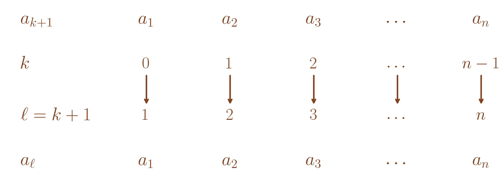
Reprenons la preuve de la valeur d’une somme télescopique.
Soit \((b_k)_{k \geq 0}\) une suite de réels ou complexes et \((a_k)_{k \geq 0}\) tel que \(\forall k \in \mathbb{N}, a_k = b_{k+1}-b_k\) alors :
\[\begin{aligned} \sum_{k=0}^na_k & = \sum_{k=0}^n b_{k+1}-b_k \\ & = \sum_{k=0}^n b_{k+1}- \sum_{k=0}^nb_k \text{ par le point 1. de la proposition~{1.1}}. \\ \end{aligned}\] En faisant le changement d’indice \(\ell = k+1\) dans la première somme, on a \[\sum_{k=0}^n b_{k+1} = \sum_{\ell=1}^{n+1}b_\ell.\]
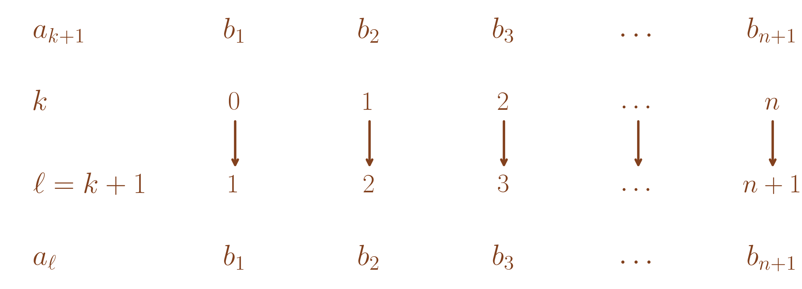
Donc \[\begin{aligned} \sum_{k=0}^na_k & = \sum_{k=0}^n b_{k+1}- \sum_{k=0}^nb_k \\ & = \sum_{k=1}^{n+1} b_{\ell}- \sum_{k=0}^nb_k \\ & = \sum_{k=1}^{n+1} b_k- \sum_{k=0}^nb_k \\ & = \left(\sum_{k=1}^{n} b_k+b_{n+1}\right)- \left(b_0+\sum_{k=1}^nb_k\right) \\ & = b_{n+1}+\sum_{k=1}^{n} b_k- b_0-\sum_{k=1}^nb_k \\ & = b_{n+1}-b_0. \end{aligned}\]
Soit \(x \in \mathbb{C}, \neq 1\), \(k_0 \in \mathbb{N}\) et \(n \geq k_0\), \(\displaystyle\sum_{k=k_0}^n x^k = \frac{x^{n+1}-x^{k_0}}{x-1}\)
En posant \(\ell = k-k_0 \iff k=\ell+k_0\),
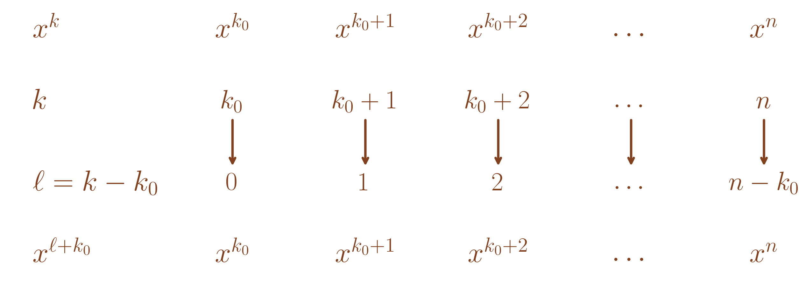
\[\begin{aligned} \sum_{k=k_0}^n x^k & = \sum_{\ell=0}^{n-k_0} x^{\ell+k_0} \\ & = \sum_{\ell=0}^{n-k_0} x^{\ell}x^{k_0} \\ & = x^{k_0} \sum_{\ell=0}^{n-k_0} x^{\ell} \text{ par le point 2. de la proposition~{1.1}} \\ & = x^{k_0}\frac{x^{n-k_0+1}-1}{x-1} \\ & = \frac{x^{n+1}-x^{k_0}}{x-1}. \end{aligned}\]
Reprenons le calcul de la somme \(S_n = \sum_{k=0}^n k\) pour \(n \in \mathbb{N}\).
En faisant le changement d’indice \(\ell = n-k\), on a \(k = n-\ell\) et
\(0 \leq k \leq n \Longrightarrow -n \leq -k \leq 0 \Longrightarrow 0 \leq n-k \leq n \Longrightarrow 0 \leq \ell \leq’ n\).
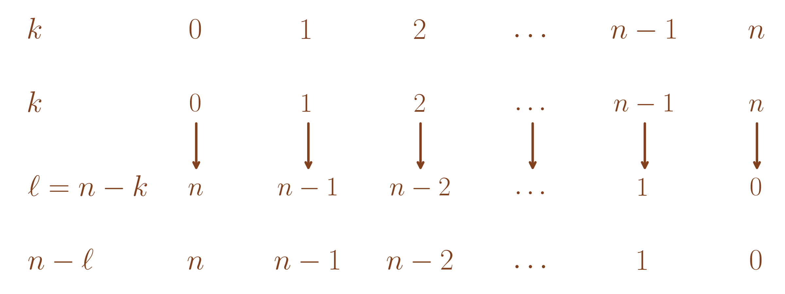
Donc \[S_n = \sum_{k=0}^n k = \sum_{\ell=0}^n (n-\ell) = \sum_{\ell=0}^n n - \sum_{\ell=0}^n \ell = n(n+1)-S_n\] Donc \(2S_n = n^2+n = n(n+1)\) donc \(S_n = \frac{n(n+1)}{2}\).
Calculons \(S_n' = \sum_{k=k_0}^n k\) pour \(n,k_0 \in \mathbb{N}\) tels que \(k_0 \leq n\).
En posant \(\ell = k-k_0 \iff k=\ell+k_0\),
\[\begin{aligned} S_n' &= \sum_{k=k_0}^n k \\ &= \sum_{\ell=0}^{n-k_0} (\ell + k_0) \\ &= \sum_{\ell=0}^{n-k_0} \ell + k_0 \sum_{\ell=0}^{n-k_0} 1 \text{ par la proposition~{1.1}} \\ &= \frac{(n-k_0)(n-k_0+1)}{2} + k_0(n-k_0+1) \\ &= \frac{(n-k_0+1)(n+k_0)}{2} \end{aligned}\]
Pour \(k,\ell \in \mathbb{N}\), on considère \(u_{k,\ell}\in \mathbb{C}\).
Soient \(n \in \mathbb{N},p \in \mathbb{N}\), on fixe \(k \in [\![ 0,n ]\!]\) et on considère \(\displaystyle\sum_{\ell=0}^p u_{k,\ell}\) qui dépend de \(k\).
On fixe \(\ell \in [\![0,\ldots,p]\!]\) et on considère \(\displaystyle\sum_{k=0}^n u_{k,\ell}\) qui dépend de \(\ell\).
Alors on a : \[\displaystyle\sum_{k=0}^n \left(\sum_{\ell = 0}^p u_{k,\ell}\right) = \sum_{\ell = 0}^p\left(\sum_{k=0}^n u_{k,\ell}\right)\]
\(\quad\) Ces deux sommes reviennent à sommer les termes dans un ordre ou dans l’autre comme illustré dans le tableau ci-dessous.
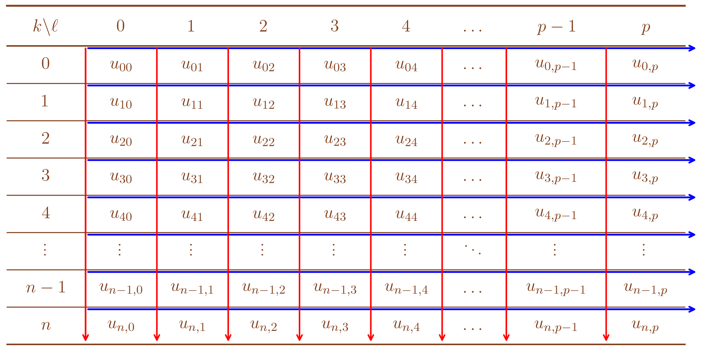
\[\begin{aligned} {\color{blue}\sum_{\ell = 0}^p\left(\sum_{k=0}^n u_{k,\ell}\right)} = & \sum_{k=0}^n u_{k,0} + \ldots + \sum_{k=0}^n u_{k,p} \\ = & u_{0,0} + u_{1,0} + \ldots +u_{n,0} \\ & + u_{0,1} + u_{1,1} + \ldots + u_{n,1}\\ & + \ldots +\\ & + u_{0,p} + u_{1,p} + \ldots + u_{n,p}\\ = &\sum_{\ell = 0}^pu_{0,\ell} + \sum_{\ell = 0}^pu_{1,\ell} + \ldots + \sum_{\ell = 0}^pu_{n,\ell} \\ = & {\color{red}\sum_{k=0}^n \left(\sum_{\ell = 0}^p u_{k,\ell}\right)} \end{aligned}\]
Exercice — Soient \(p,n \in \mathbb{N}^{\star}\), calculer \(S = \displaystyle\sum_{\ell = 0}^p\sum_{k=1}^n \left(\frac{1}{(k+1)^\ell} - \frac{1}{k^l}\right).\)
Corrigé — \[\begin{aligned} S &= \sum_{\ell=0}^p\sum_{k=1}^n \left(\frac{1}{(k+1)^\ell}-\frac{1}{k^\ell}\right) \\ &= \sum_{\ell=0}^p \left(\frac{1}{(n+1)^\ell}-1\right) \text{ par télescopage} \\ &= \sum_{\ell=0}^p \frac{1}{(n+1)^\ell}-(p+1) \\ &= \frac{1-\left(\frac{1}{n+1}\right)^{p+1}}{1-\frac{1}{n+1}}-(p+1) \text{ comme on a reconnu une somme géométrique} \\ &= \frac{n+1}{n}\left(1-\left(\frac{1}{n+1}\right)^{p+1}\right)-(p+1). \end{aligned}\]
Dans le cas où \(u_{k,\ell} = a_kb_\ell\),
\[\displaystyle\sum_{\ell = 0}^p\left(\sum_{k=0}^n a_kb_\ell\right) = \sum_{\ell = 0}^pb_\ell\left(\sum_{k=0}^n a_k\right) = \left(\sum_{\ell = 0}^pb_\ell\right)\left(\sum_{k=0}^n a_k\right).\] En revanche, en général, \[\sum_{k=0}^n a_kb_k \neq \left(\sum_{k=0}^n a_k\right)\left(\sum_{k=0}^n b_k\right).\]
Soient \(a,b \in \mathbb{C}, n \in \mathbb{N}, \geq 2\). \[a^n-b^n = (a-b)\sum_{k=0}^{n-1}a^{n-1-k}b^{k}\]
\[\begin{aligned} (a-b)\sum_{k=0}^{n-1}a^{n-1-k}b^{k} & = a\sum_{k=0}^{n-1}a^{n-1-k}b^{k}-b\sum_{k=0}^{n-1}a^{n-1-k}b^{k} \\ & = \sum_{k=0}^{n-1}a^{n-k}b^{k}-\sum_{k=0}^{n-1}a^{n-1-k}b^{k+1} \\ & = \sum_{k=0}^{n-1}a^{n-k}b^{k}-\sum_{\ell=1}^{n}a^{n-\ell}b^{\ell} \text{ en posant le changement d'indice $\ell = k+1$,}\\ & = a^n+\sum_{k=1}^{n-1}a^{n-k}b^{k}-\sum_{\ell=1}^{n-1}a^{n-\ell}b^{\ell}-b^n \\ & = a^n-b^n. \end{aligned}\]
Soit \((a_k)_{k\in\mathbb{N}}\) ( ou \((a_k)_{k\geq k_0}\) ) suite d’éléments de \(\mathbb{C}\) et \(n \in \mathbb{N}\) ( ou \(n \geq k_0\) ), on considère \(a_0\times a_1 \ldots \times a_n\) ( ou \(a_{k_0}\times a_1 \ldots \times a_n\) ) noté \(\prod_{k=0}^na_k\) ( ou \(\prod_{k=k_0}^n a_k\) ).
Si \(a_k = \frac{b_{k+1}}{b_k}\) où \(b_k \neq 0\) pour tout \(k\), \[\prod_{k=0}^n a_k = \prod_{k=0}^n\frac{b_{k+1}}{b_k} =\frac{\prod_{k=0}^n b_{k+1}}{\prod_{k=0}^n b_k} = \frac{b_1 \ldots \times b_n \times b_{n+1}}{b_0\times b_1 \ldots \times b_n} =\frac{b_{n+1}}{b_0}\]
Si \(a_k = a^k\), \[\prod_{k=0}^n a_k = a^{\displaystyle\sum_{k=0}^nk} = a^\frac{n(n+1)}{2}\]
Si \(a_k =k\),
\(\prod_{k=0}^n a_k = 1\times 2 \times 3
\ldots \times n\) est la factorielle de \(n\), notée \(n!\)
Soient \(a_0,\ldots,a_n\) des réels, \[e^{\sum_{k=0}^na_k} = \prod_{k=0}^ne^{a_k}\]
Soient \(b_0,\ldots,b_n\) des réels strictement positifs, \[\ln\left(\prod_{k=0}^nb_k\right) = \sum_{k=0}^n\ln(b_k)\]
Soit \(n \in \mathbb{N}\) et \(E\) un ensemble fini à \(n\) éléments ( dans ce cas, \(E\) est dit de cardinal \(n\) ).
Soit \(k \in [\![ 0,n ]\!]\), le nombre nombre de parties de \(E\) à \(k\) éléments, est noté \(\binom{n}{k}\), lu "\(k\) parmi \(n\)". Ces nombres sont appelés les coefficients binomiaux.
Il y a une partie de \(E\) à \(0\) élément qui est l’ensemble vide \(\emptyset\) donc \(\binom{n}{0} = 1\).
Il y a une partie de \(E\) à \(n\) éléments qui est \(E\) donc \(\binom{n}{n} = 1\).
Il y a \(n\) parties de \(E\) à \(n\) éléments. En effet, si \(E =\left\{x_1,\ldots,x_n\right\}\), ces parties sont les \(\left\{x_k\right\}\) pour \(1 \leq k \leq n\). Donc \(\binom{n}{n} = 1\).
\(\forall n \in \mathbb{N}, k \in [\![0,n]\!], \binom{n}{n-k} = \binom{n}{k}\)
Soit \(E\) de cardinal \(n\).
Soit \(\mathcal{A}_k\) l’ensemble des parties de \(E\) à \(k\) éléments et \(\mathcal{B}_{n-k}\) l’ensemble des parties de \(E\) à \(n-k\) éléments.
Soit \(A \in \mathcal{A}_k\) alors \(E\setminus A \in \mathcal{B}_{n-k}\) donc \(\mathcal{B}_{n-k}\) est l’ensemble des parties \(E\setminus A\) avec \(A \in \mathcal{A}_k\).
Réciproquement, \(\mathcal{A}_k\) est l’ensemble des parties \(E\setminus B\) avec \(B \in \mathcal{B}_{n-k}\).
Donc \(\mathcal{A}_k\) et \(\mathcal{B}_{n-k}\) ont le même nombre d’éléments.
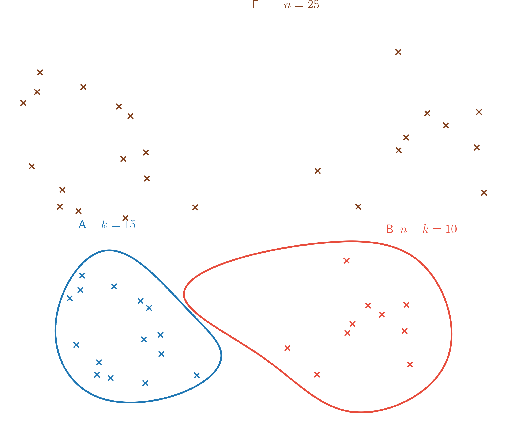
(Formule du triangle) Soient \(n \geq 2\) et \(k \in [\![1,n-1]\!]\), \(\binom{n}{k} = \binom{n-1}{k} + \binom{n-1}{k-1}\).
On considère \(E = \{x_1,\ldots,x_n\}\) et \(E' = \{x_1,\ldots,x_{n-1}\}\)
\(\binom{n}{k}\) est nombre de parties de \(E\) à \(k\) éléments
\(\binom{n-1}{k}\) est nombre de parties de \(E'\) à \(k\) éléments
\(\binom{n-1}{k-1}\) est nombre de parties de \(E'\) à \(k-1\) éléments
Soit \(A\) une partie de \(E\) à \(k\) éléments,
Si \(x_n\notin A\), \(A\) est une partie de \(E'\) à \(k\) éléments
Si \(x_n\in A\), \(B = A \setminus \{x_n\}\) est une partie de \(E'\) à \(k-1\) éléments
Or il y a \(\binom{n-1}{k}\) parties de \(E'\) à \(k\) éléments et il y a \(\binom{n-1}{k-1}\) parties \(B\) possibles
Donc il y a \(\binom{n-1}{k} + \binom{n-1}{k-1}\) parties de \(E\) à \(k\) éléments.
Donc \(\binom{n}{k} = \binom{n-1}{k} + \binom{n-1}{k-1}\)
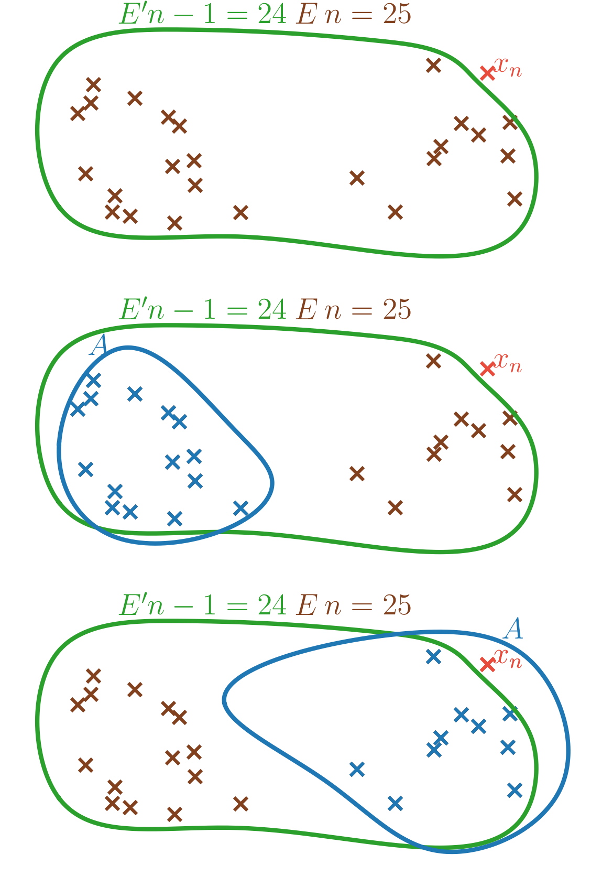
On en déduit le dessin du triangle de Pascal ci-dessous.
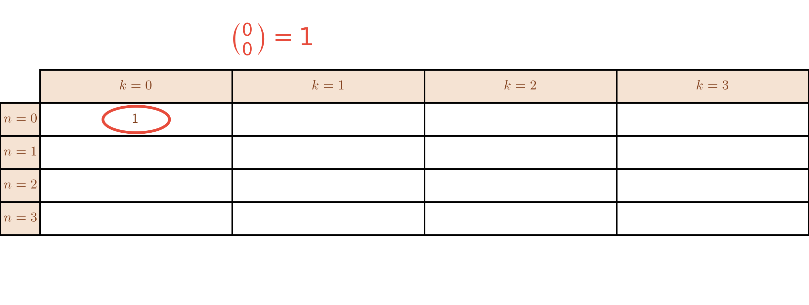 |
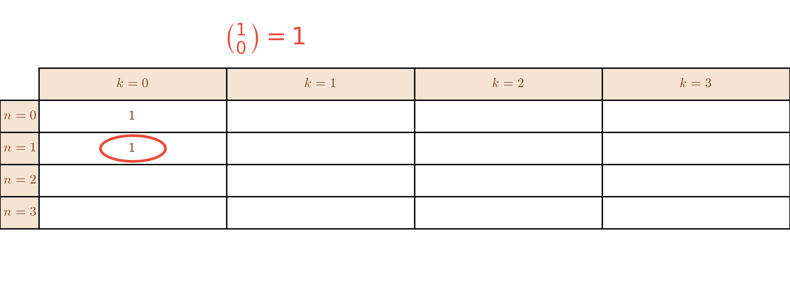 |
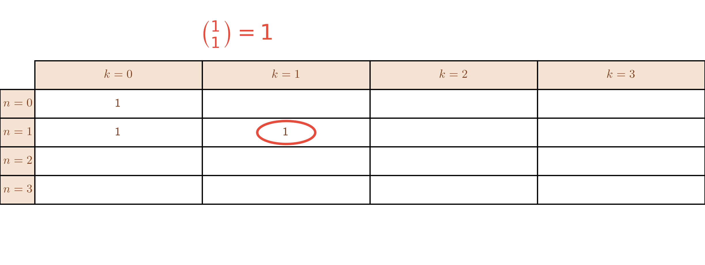 |
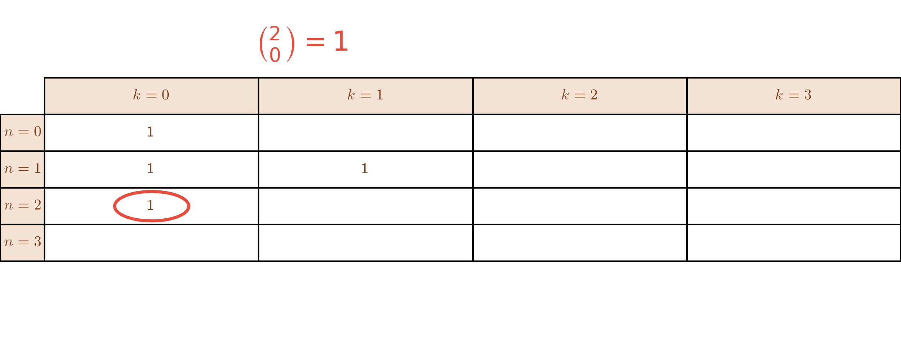 |
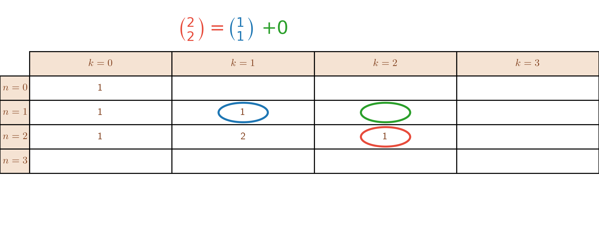 |
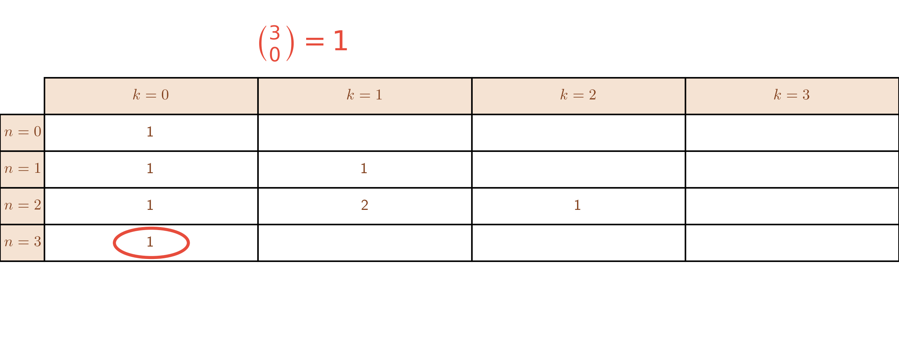 |
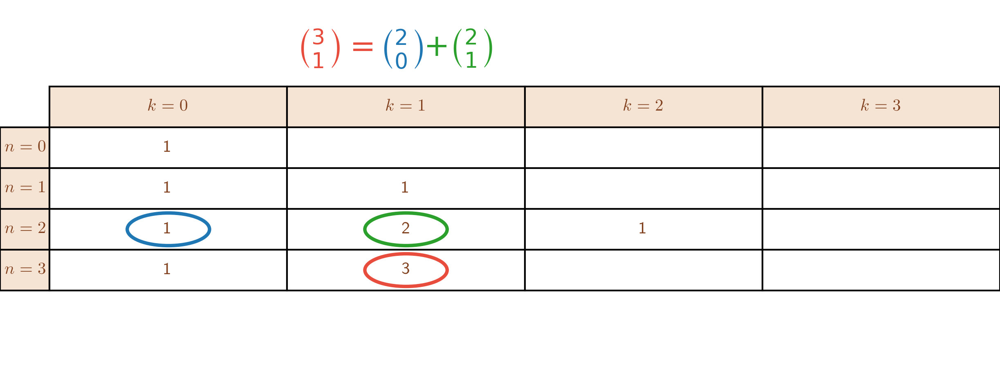 |
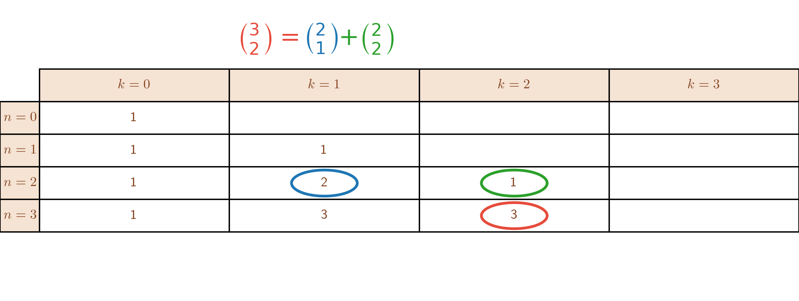 |
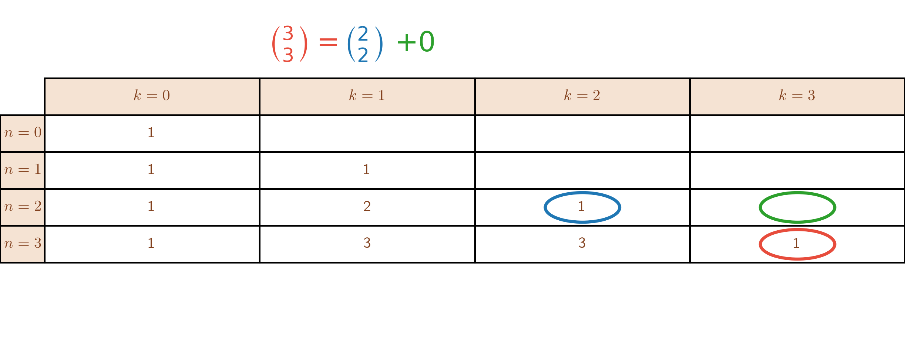 |
que l’on peut étendre et dessiner simplement \[\begin{array}{lllllll} 1 &&&&&& \\ 1 & 1&&&&& \\ 1 &2 & 1&&&& \\ 1 &3 &3&1&&& \\ 1 &4&6&4&1&& \\ 1 &5&10&10&5&1& \\ 1 &6&15&20&15&6&1 \\ \end{array}\]
(Formule du binôme de Newton) Soient \(a,b \in \mathbb{C}\) et \(n \in \mathbb{N}\), on a \[(a+b)^n = \displaystyle\sum_{k=0}^n \binom{n}{k}a^kb^{n-k}.\]
Prouvons ce résultat par récurrence sur \(n\) pour \(a,b \in \mathbb{C}\) fixés.
INITIALISATION : Si \(n = 0, (a+b)^0 = 1 =\binom{0}{0}a^0b^{0-0} =\sum_{k=0}^0 \binom{0}{k}a^kb^{0-k}\)
HÉRÉDITÉ : Supposons que pour \(n \in \mathbb{N}^\star\) fixé,\((a+b)^n = \displaystyle\sum_{k=0}^n \binom{n}{k}a^kb^{n-k}.\)
On a alors \[\begin{aligned} (a+b)^{n+1} & = (a+b)^n(a+b) \\ & = \left(\sum_{k=0}^n \binom{n}{k}a^kb^{n-k}\right)(a+b) \text{ par hypothèse de récurrence}\\ & = a\sum_{k=0}^n \binom{n}{k}a^kb^{n-k}+b\sum_{k=0}^n \binom{n}{k}a^kb^{n-k} \\ & = \underbrace{\sum_{k=0}^{n}\binom{n}{k}a^{k+1}b^{n-k}}_{= S_1} + \sum_{k=0}^{n}\binom{n}{k}a^{k}b^{n+1-k} \end{aligned}\] En utilisant le changement d’indice \(\ell = k+1\), \[S_1 = \displaystyle\sum_{\ell = 1}^{n+1}\binom{n}{\ell-1}a^\ell b^{n-(\ell-1)}=\sum_{\ell = 1}^{n+1}\binom{n}{\ell-1}a^\ell b^{n+1-\ell}\]
D’où : \[\begin{aligned} (a+b)^{n+1} & = \sum_{\ell = 1}^{n+1}\binom{n}{\ell-1}a^\ell b^{n+1-\ell} + \sum_{\ell=0}^{n}\binom{n}{\ell}a^{\ell}b^{n+1-\ell} \\ & = \sum_{\ell = 1}^{n}\binom{n}{\ell-1}a^\ell b^{n+1-\ell} + \binom{n}{n}a^{n+1}b^0+ \binom{n}{0}a^0b^{n+1}+ \sum_{\ell=1}^{n}\binom{n}{\ell}a^{\ell}b^{n+1-\ell} \\ & = \underbrace{\binom{n}{n}}_{ =1= \binom{n+1}{n+1}}a^{n+1}b^0+ \underbrace{\binom{n}{0}}_{=1=\binom{n+1}{0}}a^0b^{n+1}+\sum_{\ell=1}^{n}\underbrace{\left(\binom{n}{\ell-1} + \binom{n}{\ell}\right)}_{ = \binom{n+1}{\ell}}a^{\ell}b^{n+1-\ell} \\ & = \sum_{\ell=0}^{n+1} \binom{n+1}{\ell}a^\ell b^{n+1-\ell} \end{aligned}\] Conclusion : \(\forall n \in \mathbb{N}\), on a \((a+b)^n = \displaystyle\sum_{k=0}^n \binom{n}{k}a^kb^{n-k}\)
Pour retrouver ces formules, on peut dessiner le triangle de Pascal. \[\begin{array}{lllllllll} (a+b)^0=&{\color{blue}1 }a^0b^0&&&&&& &=1 \\ (a+b)^1=&{\color{blue}1 }a^1b^0 & {\color{blue}1 }a^0b^1&&&&& &= a+b\\ (a+b)^2=&{\color{blue}1 }a^2b^0 &{\color{blue}2 }a^1b^1& {\color{blue}1 }a^0b^2&&&&&=a^2+2ab+b^2\\ (a+b)^3=&{\color{blue}1 }a^3b^0 &{\color{blue}3 }a^2b^1&{\color{blue}3 }a^1b^2&{\color{blue}1 } a^0b^3&&& &=a^3+3a^2b+3ab^2+b^3\\ (a+b)^4=&{\color{blue}1 }a^4b^0 &{\color{blue}4 } a^3b^1&{\color{blue}6 }a^2b^2&{\color{blue}4 }a^1b^3&{\color{blue}1 }a^0b^4&& &=a^4+4a^3b+6a^2b^2+4ab^3+b^4\\ (a+b)^5=&{\color{blue}1 }a^5b^0&{\color{blue}5 }a^4b^1&{\color{blue}10 }a^3b^2&{\color{blue}10 }a^2b^3&{\color{blue}5 }a^1b^4&{\color{blue}1 }a^0b^5&&=a^5+5a^4b+10a^3b^2+10a^2b^3+5ab^4+b^5\\ \end{array}\]
\(\forall n \in \mathbb{N}, \displaystyle\sum_{k=0}^n \binom{n}{k} = 2^n\) .
Exercice — Soit \(n \in \mathbb{N}^\star\), on considère les entiers \(\binom{n}{2k}\) si \(2k \leq n\iff k \leq \frac{n}{2}\) donc \(k \in [\![0,\left\lfloor\frac{n}{2}\right\rfloor]\!]\) et de même \(\binom{n}{2k+1}\) pour \(k \in [\![0,\left\lfloor\frac{n-1}{2}\right\rfloor]\!]\).
Calculer \(\displaystyle\sum_{k=0}^{\left\lfloor\frac{n}{2}\right\rfloor}\binom{n}{2k}\) et \(\displaystyle\sum_{k=0}^{\left\lfloor\frac{n-1}{2}\right\rfloor}\binom{n}{2k+1}\).
Corrigé — Avec \(a=-1,b=1\), \[\begin{aligned}
0
& = \sum_{p=0}^n\binom{n}{p}(-1)^p \\
& =
\sum_{k=0}^{\left\lfloor\frac{n}{2}\right\rfloor}\binom{n}{2k}(-1)^{2k}
+
\sum_{k=0}^{\left\lfloor\frac{n-1}{2}\right\rfloor}\binom{n}{2k+1}(-1)^{2k+1}
\\
& =
\sum_{k=0}^{\left\lfloor\frac{n}{2}\right\rfloor}\binom{n}{2k}-
\sum_{k=0}^{\left\lfloor\frac{n-1}{2}\right\rfloor}\binom{n}{2k+1}
\end{aligned}\] Donc \(\displaystyle
\sum_{k=0}^{\left\lfloor\frac{n}{2}\right\rfloor}\binom{n}{2k}
= \sum_{k=0}^{\left\lfloor\frac{n-1}{2}\right\rfloor}\binom{n}{2k+1}\).
De plus, \(\sum_{k=0}^{\left\lfloor\frac{n}{2}\right\rfloor}\binom{n}{2k}
+ \sum_{k=0}^{\left\lfloor\frac{n-1}{2}\right\rfloor}\binom{n}{2k+1} =
\sum_{p=0}^n\binom{n}{p} = 2^n\).
Donc \(\displaystyle
\sum_{k=0}^{\left\lfloor\frac{n}{2}\right\rfloor}\binom{n}{2k}
= \sum_{k=0}^{\left\lfloor\frac{n-1}{2}\right\rfloor}\binom{n}{2k+1}
=\frac{2^n}{2} =2^{n-1}\).
Soient \(n \in \mathbb{N}^\star\) et \(k \in [\![1,n]\!]\), alors \[\binom{n}{k} = \frac{n!}{k!(n-k)!}\]
Soient \(n \in \mathbb{N}^\star\) et \(k \in [\![1,n]\!]\) et \(E\) un ensemble de cardinal \(n\).
Soit \(\begin{array}{ccccc} f & : & [\![1,k]\!] & \to & E \\ & & i & \mapsto & f(i) \text{ noté } x_i \\ \end{array}\)
On suppose que pour \(i \neq j \in [\![1,k]\!]\), \(f(i) \neq f(j)\).
Donc on suppose que les \(x_i\) sont tous distincts et \(\{f(1),\ldots,f(k)\}\) a \(k\) éléments.
On dit que \(f\) est un \(k\)-arrangement des éléments de \(E\).
Notons \(N_k\) le nombre de \(k\)-arrangements de \(E\).
Calculons le nombre de \(k\)-arrangements des éléments de \(E\) de deux façons
Méthode 1 :
On a \(n\) valeurs possibles pour \(f(1)\)
On a \(n-1\) valeurs possibles pour \(f(2)\) ( car \(f(2) \neq f(1)\) )
On a \(n-2\) valeurs possibles pour \(f(3)\) ( car \(f(2) \neq f(1), f(2)\) )
\(\vdots\)
On a \(n-(k-2)\) valeurs possibles pour \(f(k-1)\) ( car \(f(k-1) \neq f(1), f(2), \ldots, f(k-2)\) )
On a \(n-(k-1)\) valeurs possibles pour \(f(k)\) ( car \(f(k) \neq f(1), f(2), \ldots, f(k-1)\) )
Donc le nombre de \(k\)-arrangements des éléments de \(E\) est \[\begin{aligned} N_k & =\displaystyle \prod_{i=0}^{k-1} (n-i) \\ & = n \times (n-1) \times \ldots (n-(k-1)) \\ & = \frac{n \times (n-1) \times \ldots (n-(k-1)) \times (n-k) \times \ldots 2 \times 1}{(n-k) \times \ldots 2 \times 1} \\ & = \frac{n!}{(n-k)!} \end{aligned}\]
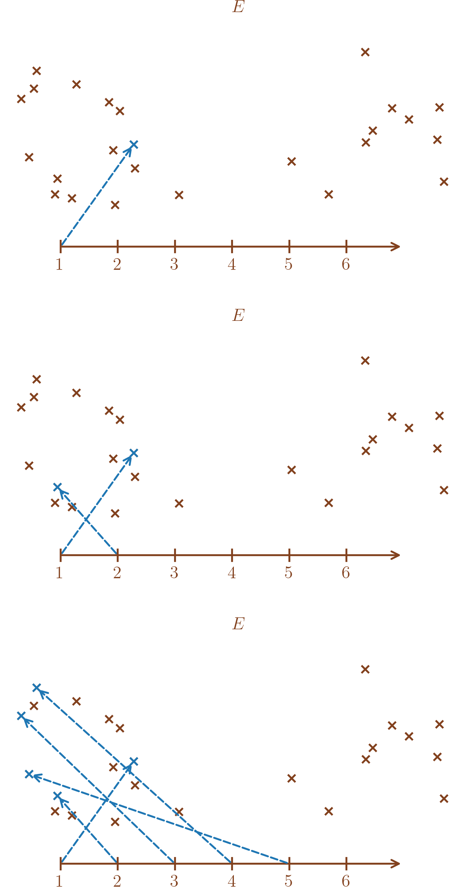
Méthode 2 :
Construire un \(k\)-arrangement \(f\) de \(E\) revient à choisir une partie \(A\) de cardinal \(k\) tel que \(A = \left\{f(1),f(2),\ldots,f(k)\right\}\).
Soit \(f\) \(k\)-arrangement tel que \(\{f(1),\ldots,f(k)\} = A\),
\(f(1)\) doit être un des éléments de \(A\) d’où \(k\) possibilités pour \(f(1)\)
\(f(2)\) doit être un des éléments de \(A\), \(\neq f(1)\) d’où \(k-1\) possibilités pour \(f(2)\)
\(\vdots\)
\(f(k)\) doit être un des éléments de \(A\), \(\neq f(1), \ldots, f(k-1)\) d’où \(k-(k-1)=1\) possibilité pour \(f(k)\)
Donc \(k\times(k-1)\times\ldots\times 1= k!\) \(k\)-arrangements donnent \(A\) et il y a \(\binom{n}{k}\) "A possibles" donc \(N_k = k!\binom{n}{k}\).
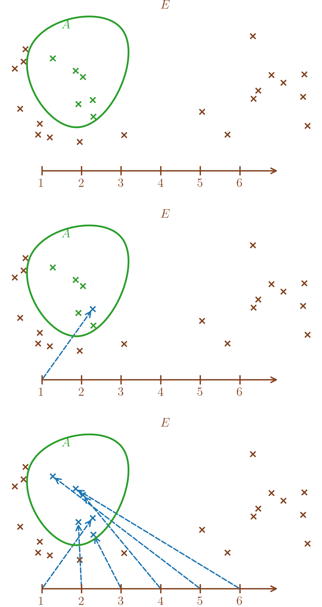
Conclusion On a \[N_k = \frac{n!}{(n-k)!}= k! \binom{n}{k}\] Donc \[\binom{n}{k} = \frac{n!}{k!(n-k)!}\]
Si \(k = 2\), \(\binom{n}{k} = \frac{n(n-1)}{2}\).
Par convention, on pose \(0! = 1\) et alors l’égalité reste valable pour \(k = 0\) et \(k = n\).
Vérification :
\(\binom{n}{0} = 1 = \frac{n!}{0!(n-0)!}\),
\(\binom{n}{n} = 1 = \frac{n!}{n!(n-n)!}\).
Soient \(a_1,a_2,b_1,b_2,\alpha,\beta \in \mathbb{R}\) (ou \(\mathbb{C}\)), on considère le système suivant aux inconnues \(x\) et \(y\) \[(S)\begin{cases} & a_1 x + b_1 y = \alpha \\ & a_2 x + b_2 y = \beta \end{cases}\]. On définit le déterminant de \((S)\) est \(\begin{vmatrix} a_1 & b_1 \\ a_2 & b_2 \end{vmatrix} = a_1b_2 - b_1a_2\).
Si \(\begin{vmatrix} a_1 & b_1 \\ a_2 & b_2 \end{vmatrix} \neq 0\), \((S)\) admet une unique solution \((x_0,y_0)\) telle que \[x_0 = \frac{\begin{vmatrix} \alpha & b_1\\ \beta & b_2 \end{vmatrix}}{\begin{vmatrix} a_1 & b_1 \\ a_2 & b_2 \end{vmatrix}} \text{ et }y_0 = \frac{\begin{vmatrix} a_1 & \alpha \\ a_2 & \beta \end{vmatrix}}{\begin{vmatrix} a_1 & b_1 \\ a_2 & b_2 \end{vmatrix}}\]
Si \(\begin{vmatrix} a_1 & b_1 \\ a_2 & b_2 \end{vmatrix} = 0\), soit \((S)\) n’admet pas de solution, soit \((S)\) admet une infinité de solution.
Si \(\begin{vmatrix} a_1 & b_1 \\ a_2 & b_2 \end{vmatrix} = a_1b_2 - b_1a_2 \neq 0\) alors \(a_1 \neq 0\) ou \(a_2 \neq 0\). Par exemple, \(a_1 \neq 0\) : \[\begin{aligned} (S)\begin{cases} & a_1 x + b_1 y = \alpha \\ & a_2 x + b_2 y = \beta \end{cases} & \iff \begin{cases} & a_1 x = \alpha - b_1 y \\ & a_2 x +b_2 y= \beta \end{cases} \\ & \iff \begin{cases} & x = \frac{\alpha}{a_1} - \frac{b_1}{a_1}y \\ & a_2x + b_2 y = \beta \end{cases} \text{ car $a_1 \neq 0$}\\ & \iff \begin{cases} & x = \frac{\alpha}{a_1} - \frac{b_1}{a_1}y \\ & a_2\left(\frac{\alpha}{a_1} - \frac{b_1}{a_1}y\right) + b_2 y = \beta \end{cases} \\ & \iff \begin{cases} & x = \frac{\alpha}{a_1} - \frac{b_1}{a_1}y \\ & \left(b_2 - \frac{b_1}{a_1}a_2\right)y = \beta - \frac{a_2}{a_1}\alpha \end{cases}\\ & \iff \begin{cases} & x = \frac{\alpha}{a_1} - \frac{b_1}{a_1}y \\ & \left(a_1b_2 - b_1a_2\right)y = \beta a_1 - a_2\alpha \end{cases} \\ & \iff \begin{cases} & x = \frac{\alpha}{a_1} - \frac{b_1}{a_1}y \\ & y = \frac{\beta a_1 - a_2\alpha}{a_1b_2 - b_1a_2} = \frac{\begin{vmatrix} a_1 & \alpha \\ a_2 & \beta \end{vmatrix}}{\begin{vmatrix} a_1 & b_1 \\ a_2 & b_2 \end{vmatrix}} \end{cases}. \end{aligned}\]
Et on a alors \[\begin{aligned} x & = \frac{\alpha}{a_1} - \frac{b_1}{a_1}y \\ & = \frac{\alpha}{a_1} - \frac{b_1}{a_1}\frac{\beta a_1 - a_2\alpha}{a_1b_2 - b_1a_2} \\ & = \frac{\alpha a_1b_2-\alpha b_1a_2-b_1\beta a_1 + b_1a_2\alpha}{a_1(a_1b_2 - b_1a_2)} \\ & = \frac{a_1(\alpha b_2-b_1\beta)}{a_1(a_1b_2 - b_1a_2)} \\ & = \frac{\alpha b_2-b_1\beta}{a_1b_2 - b_1a_2} \\ & = \frac{\begin{vmatrix} \alpha & b_1\\ \beta & b_2 \end{vmatrix}}{\begin{vmatrix} a_1 & b_1 \\ a_2 & b_2 \end{vmatrix}}. \end{aligned}\]
On obtient le même résultat avec \(a_1=0 \text{ et }a_2 \neq 0\) et en divisant par \(a_2\) dans la première étape.
Si \(\begin{vmatrix} a_1 & b_1 \\ a_2 & b_2 \end{vmatrix} = a_1b_2 - b_1a_2 = 0\),
Si \(a_1 = 0\) et \(a_2 = 0\), \[(S) \iff \left\{ \begin{array}{ll} & b_1 y = \alpha \\ & b_2 y = \beta \end{array} \right.\]
Si \(b_1 = 0 \text{ et }b_2 = 0\),
si \(\alpha = \beta = 0\), on a \((S) \iff \left\{ \begin{array}{ll} & 0 = 0\\ &0 = 0 \end{array} \right.\) et l’infinité de solution \(\left\{(x,y) / x,y \in \mathbb{R}\right\}\).
si \(\alpha \neq 0\), on a \((S) \iff \left\{ \begin{array}{ll} & 0 = \alpha \\ & 0= 0 \end{array} \right.\) donc aucune solution et de même si \(\beta \neq 0\).
Si \(b_1 \neq 0 \text{ et }b_2 = 0\),
si \(\beta = 0\), on a \((S) \iff \left\{ \begin{array}{ll} & b_1 y = \alpha \iff y = \frac{\alpha}{b_1} \\ &0 = 0 \end{array} \right.\) et l’infinité de solution \(\left\{(x,\frac{\alpha}{b_1}) / x\in \mathbb{R}\right\}\).
si \(\beta \neq 0\), on a \((S) \iff \left\{ \begin{array}{ll} & b_1 y = \alpha \\ &0 = \beta \end{array} \right.\) donc aucune solution.
Si \(b_1 = 0 \text{ et }b_2 \neq 0\),
si \(\alpha = 0\), on a \((S) \iff \left\{ \begin{array}{ll} & 0 = 0 \\ &b_2 y = \beta \iff y = \frac{\beta}{b_2} \end{array} \right.\) et l’infinité de solution \(\left\{(x,\frac{\beta}{b_2}) / x\in \mathbb{R}\right\}\).
si \(\alpha \neq 0\), on a \((S) \iff \left\{ \begin{array}{ll} & 0 = \alpha \\ &b_2 y = \beta \end{array} \right.\) donc aucune solution.
Si \(b_1 \neq 0 \text{ et }b_2 \neq 0\), on a \((S) \iff \left\{ \begin{array}{ll} & b_1y = \alpha \iff y = \frac{\alpha}{b_1}\\ &b_2 y = \beta \iff y = \frac{\beta}{b_2} \end{array} \right.\).
Si \(\frac{\alpha}{b_1} = \frac{\beta}{b_2}\), on a l’infinité de solution \(\left\{(x,\frac{\alpha}{b_1}) / x\in \mathbb{R}\right\} =\left\{(x,\frac{\beta}{b_2}) / x\in \mathbb{R}\right\}\).
Si \(\frac{\alpha}{b_1} \neq \frac{\beta}{b_2}\), on n’a aucune solution.
Si \(a_1 \neq 0\) ou \(a_2 \neq 0\). Par exemple, avec \(a_1 \neq 0\), on peut refaire le calcul précédent et on a \[\begin{aligned} (S)\begin{cases} & a_1 x + b_1 y = \alpha \\ & a_2 x + b_2 y = \beta \end{cases} & \iff \begin{cases} & x = \frac{\alpha}{a_1} - \frac{b_1}{a_1}y \\ & \left(a_1b_2 - b_1a_2\right)y = \beta a_1 - a_2\alpha \end{cases} \\ & \iff \begin{cases} & x = \frac{\alpha}{a_1} - \frac{b_1}{a_1}y \\ & 0 = \beta a_1 - a_2\alpha \end{cases} \\ \end{aligned}\]
Si \(\beta a_1 - a_2\alpha = 0\), on a l’infinité de solution \(\left\{\left(\frac{\alpha}{a_1} - \frac{b_1}{a_1}y,y\right)/y \in \mathbb{R}\right\}\).
Si \(\beta a_1 - a_2\alpha \neq 0\), on n’a aucune solution.
On obtient le même résultat avec \(a_1=0 \text{ et }a_2 \neq 0\) et en divisant par \(a_2\).
Exercice — Résoudre \((S) \left\{ \begin{array}{ll} 2x+y &= 1 \\ -x+3y &= 2 \end{array} \right.\).
Corrigé —
D’abord, vérifions s’il a une unique solution : \[\begin{vmatrix} 2 & 1 \\ -1 & 3 \end{vmatrix} = 2 \times 3 - 1\times(-1) = 7 \neq 0\]
On a donc : \[x_0 = \frac{\begin{vmatrix} 1 & 1\\ 2 & 3 \end{vmatrix}}{7} = \frac{1}{7}\text{ et }y_0 = \frac{\begin{vmatrix} 2 & 1 \\ -1 & 2 \end{vmatrix}}{7} = \frac{5}{7}.\]
Méthode du pivot de Gauss.
Reprenons l’exemple précédent, pour illustrer la méthode du pivot de Gauss, plus efficace en pratique. Étant donné \[(S) \left\{ \begin{array}{ll} 2x+y &= 1 \\ -x+3y &= 2 \end{array} \right.,\] la méthode du pivot de Gauss consiste à faire des opérations sur les lignes pour faire disparaître les éléments un à un. Sur notre exemple, on fait disparaître le terme en \(x\) de la deuxième ligne et en déroulant, on a \[\begin{aligned} (S) \left\{ \begin{array}{ll} 2x+y &= 1 \\ -x+3y &= 2 \end{array} \right. \underset{L_2 \leftarrow L_2+\frac{1}{2}L_1}{\iff} \left\{ \begin{array}{ll} 2x+y &= 1 \\ \frac{7}{2}y &= \frac{5}{2} \end{array} \right. \Longrightarrow \left\{ \begin{array}{ll} 2x+y &= 1 \Longrightarrow x = \frac{1-y}{2} = \frac{1}{7} \\ y &= \frac{5}{7} \end{array} \right.. \end{aligned}\]
Cela dit, il aurait été plus pertinent de commencer par inverser les deux lignes pour faire une opération plus simple sur les lignes. Cela donne \[\begin{aligned} (S) \left\{ \begin{array}{ll} 2x+y &= 1 \\ -x+3y &= 2 \end{array} \right. & \underset{L_2 \leftrightarrow L_1}{\iff} \left\{\begin{array}{ll} -x+3y &= 2 \\ 2x+y &= 1 \end{array} \right. \\ & \underset{L_2 \leftarrow L_2+2L_1}{\iff} \left\{\begin{array}{ll} -x+3y &= 2 \\ 7y &= 5 \end{array} \right. \iff \left\{\begin{array}{ll} x &= 3y-2 = \frac{1}{7} \\ y &= \frac{5}{7} \end{array} \right.. \end{aligned}\]
Soient \((O,\vec{i},\vec{j})\) repère orthonormé du plan, \(\mathscr{D}_1,\mathscr{D}_2\) droites du plan avec \(\mathscr{D}_1\) d’équation \(a_1x + b_1 y = c_1\) \(\mathscr{D}_2\) d’équation \(a_2x + b_2 y = c_2\), \(a_1,b_1,a_2,b_2 \in \mathbb{R}\text{ et }a_1 \neq 0\). \[\text{$\mathscr{D}_1$ et $\mathscr{D}_2$ sont parallèles $\iff$ $\begin{vmatrix} a_1 & b_1 \\ a_2 & b_2 \end{vmatrix} = 0$.}\]
\(\mathscr{D}_1\) et \(\mathscr{D}_2\) sont parallèles si et seulement s’il existe \(\lambda \in \mathbb{R}\) tel que \[\underbrace{a_2\vec{i} + b_2 \vec{j}}_{\text{vecteur normal à }\mathscr{D}_2} = \underbrace{\lambda(a_1\vec{i} + b_1 \vec{j})}_{\text{vecteur normal à }\mathscr{D}_1}\] donc si et seulement s’il existe \(\lambda \in \mathbb{R}\) tel que \(a_2 = \lambda a_1\) et \(b_2 = \lambda b_1\)
(\(\Longrightarrow\)) Si \(\mathscr{D}_1\) et \(\mathscr{D}_2\) sont parallèles, \(\begin{vmatrix} a_1 & b_1 \\ a_2 & b_2 \end{vmatrix} = a_1b_2 - a_2b_1 = a_1 \lambda b_1 - \lambda a_1 b_1 = 0\)
(\(\Longleftarrow\)) Réciproquement, si \(\begin{vmatrix} a_1 & b_1 \\ a_2 & b_2 \end{vmatrix} = 0\), comme \(a_1 \neq 0\), \(b_2 = \frac{a_2}{a_1} b_1\) et \(a_2 = \frac{a_2}{a_1}a_1\) et \(\lambda = \frac{a_2}{a_1}\) convient.
Si les droites \(\mathscr{D}_1\) et \(\mathscr{D}_2\) sont non parallèles, elles admettent un unique point d’intersection.
Soient \((O,\vec{i},\vec{j},\vec{k})\) repère orthonormé de l’espace et \(\mathscr{P}_1,\mathscr{P}_2\) plans de l’espace d’équations respectives \(a_1x + b_1 y + c_1 z = d_1\) et \(a_2x + b_2y + c_2z = d_2\) avec \(a_1,b_1,c_1,a_2,b_2,c_2 \in \mathbb{R}\text{ et }a_1 \neq 0\). \[\mathscr{P}_1 \text{ et } \mathscr{P}_2 \text{ sont parallèles } \iff \begin{vmatrix} a_1 & b_1 \\ a_2 & b_2 \end{vmatrix} = 0 \text{ et }\begin{vmatrix} a_1 & c_1 \\ a_2 & c_2 \end{vmatrix} = 0\]
\[\mathscr{P}_1 \text{ et } \mathscr{P}_2 \text{ sont parallèles } \iff \exists \lambda \in \mathbb{R}\text{ tel que } \left\{ \begin{array}{ll} & a_2 = \lambda a_1 \\ & b_2 = \lambda b_1 \\ & c_2 = \lambda c_1 \end{array} \right.\]
\((\Longrightarrow)\) S’il existe \(\lambda \in \mathbb{R}\text{ tel que }\left\{\begin{array}{ll} & a_2 = \lambda a_1 \\ & b_2 = \lambda b_1 \\ & c_2 = \lambda c_1 \end{array}\right.\) alors \(\begin{vmatrix} a_1 & b_1 \\ a_2 & b_2 \end{vmatrix} = 0 \text{ et }\begin{vmatrix} a_1 & c_1 \\ a_2 & c_2 \end{vmatrix} = 0\).
\((\Longleftarrow)\) Si \(\begin{vmatrix} a_1 & b_1 \\ a_2 & b_2 \end{vmatrix} = 0\) et \(\begin{vmatrix} a_1 & c_1 \\ a_2 & c_2 \end{vmatrix} = 0\), comme \(a_1 \neq 0\), on a
\(a_1 b_2 - b_1 a_2 = 0\) donc \(b_2 = b_1 \frac{a_2}{a_1}\) et \(a_1 c_2 - c_1 a_2 = 0\) donc \(c_2 = c_1 \frac{a_2}{a_1}\)
donc avec \(\lambda = \frac{a_2}{a_1}\), on retrouve que \(\mathscr{P}_1\) et \(\mathscr{P}_2\) sont parallèles.
Si \(\mathscr{P}_1\) et \(\mathscr{P}_2\) sont non parallèles alors ils admettent une droite comme intersection.
\(\begin{vmatrix} a_1 & b_1 \\ a_2 & b_2 \end{vmatrix} \neq 0\) ou \(\begin{vmatrix} a_1 & c_1 \\ a_2 & c_2 \end{vmatrix} \neq 0\) et traitons le cas \(\begin{vmatrix} a_1 & b_1 \\ a_2 & b_2 \end{vmatrix} \neq 0\).
Soit \(M(x,y,z_0) \in \mathscr{P}_1 \cap \mathscr{P}_2\), \[\begin{aligned} \left\{\begin{array}{ll} & a_1x + b_1 y + c_1 z_0 = d_1 \\ & a_2x + b_2y + c_2z_0 = d_2\\ \end{array}\right. & \iff (x,y) \text{ est solution de } \left\{\begin{array}{ll} & a_1x + b_1 y= d_1 - c_1 z_0 \\ & a_2x + b_2y = d_2 - c_2z_0\\ \end{array}\right. \end{aligned}\]
Or \(\begin{vmatrix} a_1 & b_1 \\ a_2 & b_2 \end{vmatrix} \neq 0\) donc ce système possède une unique solution \((x_0,y_0)\) qui s’exprime \[\begin{aligned} x_0 & = \frac{\begin{vmatrix} d_1 - c_1 z_0& b_1 \\ d_2 - c_2 z_0 & b_2 \end{vmatrix}}{\begin{vmatrix} a_1 & b_1 \\ a_2 & b_2 \end{vmatrix}} = \alpha z_0 + \beta \text{ avec $\alpha$ et $\beta$ indépendants de $z_0$} \\ y_0 & = \frac{\begin{vmatrix} a_1 & d_1 - c_1 z_0 \\ a_2 & d_2- c_2 z_0 \end{vmatrix}}{\begin{vmatrix} a_1 & b_1 \\ a_2 & b_2 \end{vmatrix}} = \gamma z_0 + \delta \text{ avec $\gamma$ et $\delta$ indépendants de $z_0$}. \end{aligned}\] Donc : \[\begin{aligned} M(x,y,z) \in \mathscr{P}_1 \cap \mathscr{P}_2 \iff \exists t \in \mathbb{R}, \left\{\begin{array}{ll} & x = \alpha + \beta t \\ & y = \gamma + \delta t\\ & z = t \end{array}\right. \end{aligned}\] qui est la représentation paramétrique d’une droite.
Donc l’intersection de \(\mathscr{P}_1 \cap \mathscr{P}_2\) est dirigée par \(\beta \vec{i} + \delta \vec{j} + \vec{k}\)
Considérons les deux plans \(\mathscr{P}_1 : x+y+2z = 1\) et \(\mathscr{P}_2 : 3x-y+z = 2\). On a \(\begin{vmatrix} 1 & 1 \\ 3 & -1 \end{vmatrix} = -4 \neq 0\) donc ces plans sont non parallèles. De plus, \[\begin{aligned} M(x,y,z) \in \mathscr{P}_1 \cap \mathscr{P}_2 & \iff (S) \left\{ \begin{array}{ll} & x+y+2z = 1 \\ & 3x-y+z = 2 \end{array} \right. \\ & \iff \left\{ \begin{array}{ll} & x+y = 1-2z \\ & 3x-y = 2-z \end{array} \right. \\ & \underset{L_2 \leftarrow L_2+2L_1}{\iff} \left\{ \begin{array}{ll} & x+y = 1-2z \\ & 4x = 3-3z \end{array} \right. \\ & \iff \left\{ \begin{array}{ll} & y = 1-2z-x\\ & x = \frac{3}{4}-\frac{3}{4}z \end{array} \right. \\ & \iff \left\{ \begin{array}{ll} & y = \frac{1}{4}-\frac{5}{4}z\\ & x = \frac{3}{4}-\frac{3}{4}z \end{array} \right. \end{aligned}\]
D’où :
\[M(x,y,z) \in \mathscr{P}_1 \cap \mathscr{P}_2 \iff \exists t \in \mathbb{R}, \left\{\begin{array}{lll} & x = \frac{3}{4}-\frac{3}{4}t \\ & y = \frac{1}{4}-\frac{5}{4}t\\ & z = t \end{array} \right.\]
Donc \(\mathscr{P}_1 \cap \mathscr{P}_2\) est la droite passant par \(\left(\frac{3}{4},\frac{1}{4},0\right)\) et dirigé par \(-3\vec{i} -5\vec{j} + 4\vec{k}\)
Soient \(a_1,b_1,c_1,a_2,b_2,c_2,a_3,b_3,c_3, \alpha,\beta,\gamma \in \mathbb{R}\) ( ou \(\mathbb{C}\) ),
On considère \((S) \left\{\begin{array}{lll} & a_1 x +b_1 y + c_1 z = \alpha \\ & a_2 x +b_2 y + c_2 z = \beta \\ & a_3 x +b_3 y + c_3 z = \gamma \end{array} \right..\)
Si \(a_1 = a_2 = a_3 = 0\),
\((S)\) ne possède aucune solution ou en possède une infinité.
Si \(a_1 \neq 0\),
on opère \(L_2 \leftarrow L_2-\frac{a_2}{a_1} L_1\) et \(L_3 \leftarrow L_3-\frac{a_3}{a_1} (L_1)\)
Ainsi, \((S)\) devient \((S') \left\{\begin{array}{lll} & a_1 x +b_1 y + c_1 z = \alpha \\ & b'_2y + c_2' z = \beta'\\ & b_3' y + c_3' z = \gamma' \end{array} \right.\)
et il reste à étudier le système \(\left\{\begin{array}{ll} & b'_2y + c_2' z = \beta' \\ & b_3' y + c_3' z = \gamma' \end{array} \right..\)
\[\begin{aligned} (S) \left\{\begin{array}{lll} & y+2 z = 1 \\ & x -y + 3z = 2 \\ & 2x +3 y - z = 3 \end{array} \right. & \underset{L_2 \leftrightarrow L_1}{\iff} \left\{\begin{array}{lll} & x -y + 3z = 2 \\ & y+2 z = 1 \\ & 2x +3 y - z = 3 \end{array} \right. \\ & \underset{L_3 \leftrightarrow L_3-2L_1}{\iff} \left\{\begin{array}{lll} & x -y + 3z = 2 \\ & y+2 z = 1 \\ & 5y-7z = -1 \end{array} \right. \end{aligned}\]
On s’intéresse donc à : \((S') \left\{\begin{array}{ll} & y+2z = 1 \\ & 5y-7z = -1 \\ \end{array} \right.\)
\(\begin{vmatrix} 1 & 2 \\ 5 & -7 \end{vmatrix} = -17 \neq 0\) donc ce système possède une unique solution \((y_0,z_0)\).
En utilisant les formules précédentes, on a \(y_0 = \frac{5}{17}\) et \(z_0 = \frac{6}{17}\) donc \(x_0 =2+y_0-3Z_0= \frac{21}{17}\)
D’où \((S)\) a pour unique solution \((\frac{21}{17},\frac{5}{17},\frac{6}{17})\) Ceci est une nouvelle illustration de la méthode du pivot de Gauss.